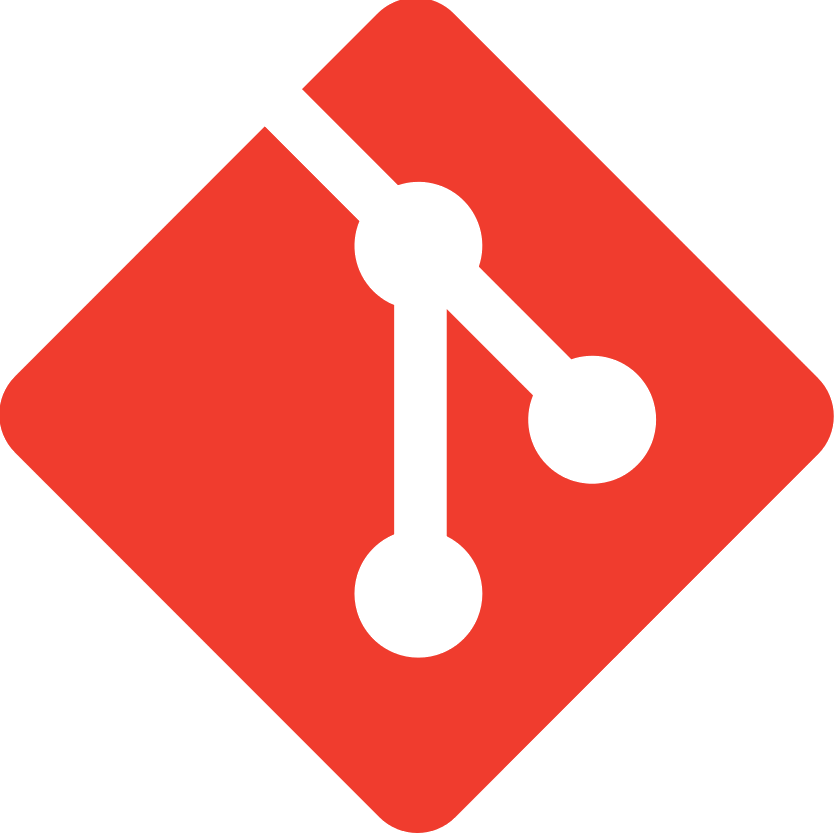

Aprende a usar GIT
Hola yo soy fabian y estoy aprendiendo a usar Git
git init
Solo se hace al iniciar un nuevo proyecto hace que Git empieze a monitoriar todo lo que hagamos
git status
Sirve para ver el estado del proyecto
git add
Sirve para agregar un archivo al commit si ya trabajamos en nuestros documentos
git add -A
Sirve para agregar todo los archivos
git commit -m 'Msg'
Sirve para guardar los cambios que se hiceron, el msj sirve para identificar que modificamos agregar commit
git log
Va a enlistar todos los commits con su informacion
git log > commits.txt
se creea un txt con los id de los commits
git checkout #nombranch
podemos navegar en los commits
git checkout master
te regresa al ultimo commit actualmente trabajando
git reset --soft
sirve para borrar pero no borra el workin area, no toca el area del trabajo
git branch
ves en que rama te encuentras
git branch #nomDelBranch
crea una nueva rama para poder modificar como hacer un testeo y no modificar la rama del MASTER! rama principal, para poder moverte entre ramas se utiliza git checkout #nombreDeBranch